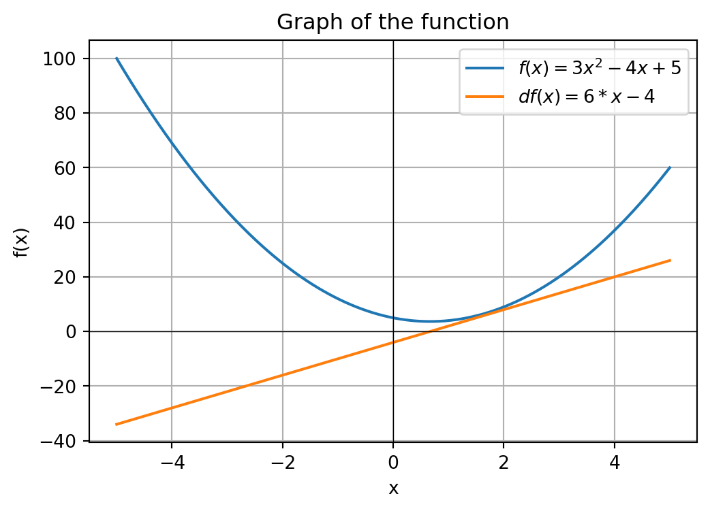

The objective from this page to undestand how to implement a neural network from scratch without any external libraries, this page consider that you already have some knwlodge of Artificial Neural Networks. The main reason for this is just to make more compreensible the black box of Neural Networks. So, to this project, the main resource (but not the unique) are the series of videos from Andrej Karpathy. In this first part, I will cover how to implement AutoGrad for do backpropagation. At the end of this post, yo will cable of create MLPs without any external library.
Basic knowledge of derivative
So, from the start, to make sense at how an NN train and learn something, you first need a very good understanding around the meaning of derivative operations. A derivative is an operation that gives us a formula that describes the slope of a function as it modifies a variable, but for out prupose, we will only work with functions that generate linear derivatives. Thus, for the function $ f(x) = 3x^2 - 4x + 5 $, see the graph below.
Show Python code
import numpy as npimport matplotlib.pyplot as plt# Define the functiondef f(x):return3*x**2-4*x +5# Generate x valuesx = np.linspace(-5, 5, 400)y = f(x)# Plotplt.figure(figsize=(6, 4))plt.plot(x, y, label=r"$f(x) = 3x^2 - 4x + 5$")plt.axhline(0, color="black", linewidth=0.5)plt.axvline(0, color="black", linewidth=0.5)plt.xlabel("x")plt.ylabel("f(x)")plt.title("Graph of the function")plt.legend()plt.grid(True)plt.show()
This function is easy to undestand and derivate analytic, the derivate is \(\frac{df(x)}{dx} = 6x - 4\). Plotting both function and his derivate, we get the graphic below.
Show Python code
import numpy as npimport matplotlib.pyplot as plt# Define the functiondef f(x):return3*x**2-4*x +5def df(x):return6*x -4# Generate x valuesx = np.linspace(-5, 5, 400)y = f(x)y2 = df(x)# Plotplt.figure(figsize=(6, 4))plt.plot(x, y, label=r"$f(x) = 3x^2 - 4x + 5$")plt.plot(x, y2, label=r"$df(x) = 6*x - 4$")plt.axhline(0, color="black", linewidth=0.5)plt.axvline(0, color="black", linewidth=0.5)plt.xlabel("x")plt.ylabel("f(x)")plt.title("Graph of the function")plt.legend()plt.grid(True)plt.show()

The basic idea is that with we want to minimize the value of a function (main objective in deep learning), we just need to see the value of a derivative in some point A, that give us all the information we need to go to the minimum spot. Just do some numerical exemple, in the graph above, note that the minimum spot is in som evalue around 0 and 2, more close to 0 (precisaly 2/3), so, just pick some rondom number, like -2, the value of \(f(x)\) with -2 is 25, and the derivative is -16. The number -16 represent the rate at which the function varies for each increase in the value of x at that point in specific. So, with we increse the value of X a little bit, we can lower the value of X, so probably, the \(f(-1.999)\) give us a lower value than \(f(-2)\)
This is the general idea of how we can minimize some function, that is also the main idea of how gradient descendent works.
How to estimate gradients
In general, to make an framework for working with nn, its just an AutoGrad (a tool that can do diferatiation automatically) and some fancy stuff for make more pratical.
For start, lets make things the most simple for now. Our goal its make an class that can calc for us all the gradietns (its the same as an derivative) from the function \(L = -2 \cdot \big((2 \cdot 3) + 10\big)\). But we dont are confortable derivate something with just numbers, so lets consider in this way the function:
a =2b =-3.0c =10f =-2e = a*bd = e + cL = d * fL
-8.0
Just to make clear, the knowledge that we want with this, is ow much changes in the final result, increase the values of any of the variables a little To get the gradients, we can use an aproximate that consists in adding a very small number \(h\) is all of the values, than subtract the new with the original, and divide by the \(h\). The code below shows how to do this with the variable \(a\):
a =2b =-3.0c =10f =-2e = a*bd = e + cL = d * fh =0.0001a =2+ hb =-3.0c =10f =-2e = a*bd = e + cL2 = d * fprint(f"L(2) = {L}")print(f"L({a}) = {L2}")print(f"The slope/gradient: {(L2 - L)/h}")
L(2) = -8.0
L(2.0001) = -7.999399999999998
The slope/gradient: 6.000000000021544
We will not use this method to create our autograd, but we can use this to verify with our gradients are right.
Lets making a simple AutoGrad
The basic idea of the AutoGrad we will make is make some very simple nodes, that represent the number in our calculation and will track all the last two nodes that make him. Basically, in \(L = -2 \cdot \big((2 \cdot 3) + 10\big)\), we will consider that a node can only save on number, like in the code represantation
a =2b =-3.0c =10f =-2e = a*bd = e + cL = d * f
So, for start, lets make the basic of our class:
class Value:def__init__(self, data, _children=(), _op="", label=""):self.data = dataself.grad =0# All nodes will start with no grad, becouse we dont know what is the grad (and for other math reaseon will explain soon)self._prev =set(_children) # Dont worry about this for know, we only use set for a little bit better performanceself._op = _op # To save the operation, its usefull for debugself.label = label # You can ignore this, its just for the graphs I make below# This is just for us visualize our classdef__repr__(self):returnf"Value(data={self.data})"
So with this class, we can create some Value’s, but we cant use them for anything, so lets make some operations
class Value:def__init__(self, data, _children=(), _op="", label=""):self.data = dataself.grad =0self._prev =set(_children) self._op = _opself.label = label # You can ignore this, its just for the graphs I make below# This is just for us visualize our classdef__repr__(self):returnf"Value(data={self.data})"def__add__(self, other):# We just add the data, and return a Value object with new data, and with pointes for the two number that make the out number out = Value(self.data + other.data, (self,other), '+')return outdef__mul__(self, other): out = Value(self.data * other.data, (self,other), "*")return out
And with this simples class, we can know calc our formula (not the gradients yet)
a = Value(2., label="a")b = Value(-3.0, label="b")c = Value(10., label="c")f = Value(-2., label="f")e = a * b; e.label="e"d = e + c; d.label="d"L = d * f; L.label="L"L
Value(data=-8.0)
This calculation moting the structure of a graph is known as pass forward Below, a just make an graph to visualize the operations (note that the operator is not an actual node, but for vizualize this is better), The question is, how we can get the gradients for \(L\), \(d\) and \(f\)?
For \(L\), I think it´s a little obvious, its just 1, from calculus, the derivative for the function \(f(x) = x\) its 1. For \(d\) and \(f\), we it´s simple too, from calculus, de derivative \(f(x) = zx\) its just z, and this is the case for both \(d\) and \(f\). See the equation below \[
L(d,f) = d \cdot f
\]\[
\frac{\partial L}{\partial d} = f \quad \text{and} \quad \frac{\partial L}{\partial f} = d
\]
So, the gradient for \(d\) is the value of data in \(f\), and for the \(f\), it´s the value of data in \(d\), in this case, the grad of \(d\) is -2 and the grad of \(f\) is 4.
Now its start being interesting, we want to calc the gradient of \(e\) and \(c\) in relation of \(L\). From the chain of rule, we have the expression below: \[
\frac{\partial L}{\partial e} = \frac{\partial L}{\partial d} \cdot \frac{\partial d}{\partial e}
\] Bascially, it´s saying that the gradient of \(e\) in relation with \(L\) it´s just the gradient of \(d\) in relation with \(L\) time \(e\) in relation with \(d\). This mean that we only have to calc the local gradient \(\frac{\partial d}{\partial e}\) because we already have calc the \(\frac{\partial L}{\partial d}\) and its save in d.grad. The same with \(c\) it´s true. So, from calculus, the gradient from an expression like \(f(x,y) = x + y\) its 1 for both \(x\) and \(y\). Thus, we have
This is the strong concept that make the AutoGrad work, we only need to calc the local gradient and multiply with the gradient from the father of nodes (because the gradient of the father already is in relation with the last node).
So for the last two variables \(a\) and \(b\), its another multiplication, so the local grad of \(b\) its data of \(a\), and for \(a\) its data from \(b\). Put in a code, its just
This is a complete backward pass manual, know we need to make a code to this automatically for us
Automatically backward pass
To make this automatically, we probably notted that we need to start from the last node and go in a reverse order, this is necessery because for calc the gradient of and node, we need the local gradient of the variable, and the gradient of the father, the unique exception is the last node, because its gradient always will be 1. The way will we implement this, its just make a node do the calc of his childs gradients, lets see the mul function:
class Value:def__init__(self, data, _children=(), _op="", label=""):self.data = dataself.grad =0self._backward =None# Add this new parameter too save the funcself._prev =set(_children) self._op = _opself.label = label def__mul__(self, other): out = Value(self.data * other.data, (self,other), '+')def _backward():# We use += over =, because with we use the same node two times it will be reset, and with this node influences in two other nodes, its influence in final result, are the sum of the influence on both nodesself.grad += other.data * out.grad other.grad +=self.data * out.grad out._backward = _backwardreturn out
Lets check with this can calc the gradients of \(d\) and \(f\)
a = Value(2., label="a")b = Value(-3.0, label="b")c = Value(10., label="c")f = Value(-2., label="f")e = a * b; e.label="e"d = e + c; d.label="d"L = d * f; L.label="L"L.grad =1L._backward()print("Grad of d:", d.grad)print("Grad of f:", f.grad)
Grad of d: -2.0
Grad of f: 4.0
It works! So know, its just do for add too, below are the complete Value class
Show Python code
class Value:def__init__(self, data, _children=(), _op="", label=""):self.data = dataself.grad =0self._backward =lambda: None# Add this new parameter too save the funcself._prev =set(_children) self._op = _opself.label = label def__mul__(self, other): out = Value(self.data * other.data, (self,other), '+')def _backward():self.grad += other.data * out.grad other.grad +=self.data * out.grad out._backward = _backwardreturn out# This is just for us visualize our classdef__repr__(self):returnf"Value(data={self.data})"def__add__(self, other):# We just add the data, and return a Value object with new data, and with pointes for the two number that make the out number out = Value(self.data + other.data, (self,other), '+')def _backward():self.grad += out.grad other.grad += out.grad out._backward = _backwardreturn out
Lets check with we can calc all the gradients:
a = Value(2., label="a")b = Value(-3.0, label="b")c = Value(10., label="c")f = Value(-2., label="f")e = a * b; e.label="e"d = e + c; d.label="d"L = d * f; L.label="L"L.grad =1L._backward() # Node L: Propagates gradient to d and fd._backward() # Node d: Propagates gradient to e and cf._backward() # Node f (Leaf): Does nothing (empty lambda)e._backward() # Node e: Propagates gradient to a and bc._backward() # Node c (Leaf): Does nothingb._backward() # Node b (Leaf): Does nothinga._backward() # Node a (Leaf): Does nothingprint(f"L data: {L.data}")print("-"*20)print(f"Grad of L: {L.grad}") # Should be 1print(f"Grad of f: {f.grad}") # Should be 4.0 (d.data)print(f"Grad of d: {d.grad}") # Should be -2.0 (f.data)print(f"Grad of c: {c.grad}") # Should be -2.0 (1 * d.grad)print(f"Grad of e: {e.grad}") # Should be -2.0 (1 * d.grad)print(f"Grad of b: {b.grad}") # Should be -4.0 (a.data * e.grad -> 2 * -2)print(f"Grad of a: {a.grad}") # Should be 6.0 (b.data * e.grad -> -3 * -2)
L data: -8.0
--------------------
Grad of L: 1
Grad of f: 4.0
Grad of d: -2.0
Grad of c: -2.0
Grad of e: -2.0
Grad of b: -4.0
Grad of a: 6.0
It worked perfectly, know we only need to make a funcion that calls all _backward() in all nodes recursively. Therefore we will use an algorithm for generating the topological order of the graph. That is, a linear order in which we can execute the nodes without causing any kind of dependency problem. Explaining this algorithm in depth is outside the scope of this project, but it is not that complicated, see below:
# ... All methods of Value classdef backward(self):self.grad =1# Montar ordem topologica topo = [] visited =set()def build_topo(v):if v notin visited: visited.add(v)for child in v._prev: build_topo(child) topo.append(v) build_topo(self)for node inreversed(topo): node._backward()
Know, lets test our backward function
Show Python code
class Value:def__init__(self, data, _children=(), _op="", label=""):self.data = dataself.grad =0self._backward =lambda: None# Add this new parameter too save the funcself._prev =set(_children) self._op = _opself.label = label def__mul__(self, other): out = Value(self.data * other.data, (self,other), '+')def _backward():self.grad += other.data * out.grad other.grad +=self.data * out.grad out._backward = _backwardreturn out# This is just for us visualize our classdef__repr__(self):returnf"Value(data={self.data})"def__add__(self, other):# We just add the data, and return a Value object with new data, and with pointes for the two number that make the out number out = Value(self.data + other.data, (self,other), '+')def _backward():self.grad += out.grad other.grad += out.grad out._backward = _backwardreturn outdef backward(self):self.grad =1# Montar ordem topologica topo = [] visited =set()def build_topo(v):if v notin visited: visited.add(v)for child in v._prev: build_topo(child) topo.append(v) build_topo(self)for node inreversed(topo): node._backward()
a = Value(2., label="a")b = Value(-3.0, label="b")c = Value(10., label="c")f = Value(-2., label="f")e = a * b; e.label="e"d = e + c; d.label="d"L = d * f; L.label="L"L.backward() print(f"L data: {L.data}")print("-"*20)print(f"Grad of L: {L.grad}") # Should be 1print(f"Grad of f: {f.grad}") # Should be 4.0 (d.data)print(f"Grad of d: {d.grad}") # Should be -2.0 (f.data)print(f"Grad of c: {c.grad}") # Should be -2.0 (1 * d.grad)print(f"Grad of e: {e.grad}") # Should be -2.0 (1 * d.grad)print(f"Grad of b: {b.grad}") # Should be -4.0 (a.data * e.grad -> 2 * -2)print(f"Grad of a: {a.grad}") # Should be 6.0 (b.data * e.grad -> -3 * -2)
L data: -8.0
--------------------
Grad of L: 1
Grad of f: 4.0
Grad of d: -2.0
Grad of c: -2.0
Grad of e: -2.0
Grad of b: -4.0
Grad of a: 6.0
It´s worked perfectly again, know we already have a functional AutoGrad system, know, it´s just need to add more operations and we will be capable of create our propely framework of Deep Learning using our own AutoGrad.